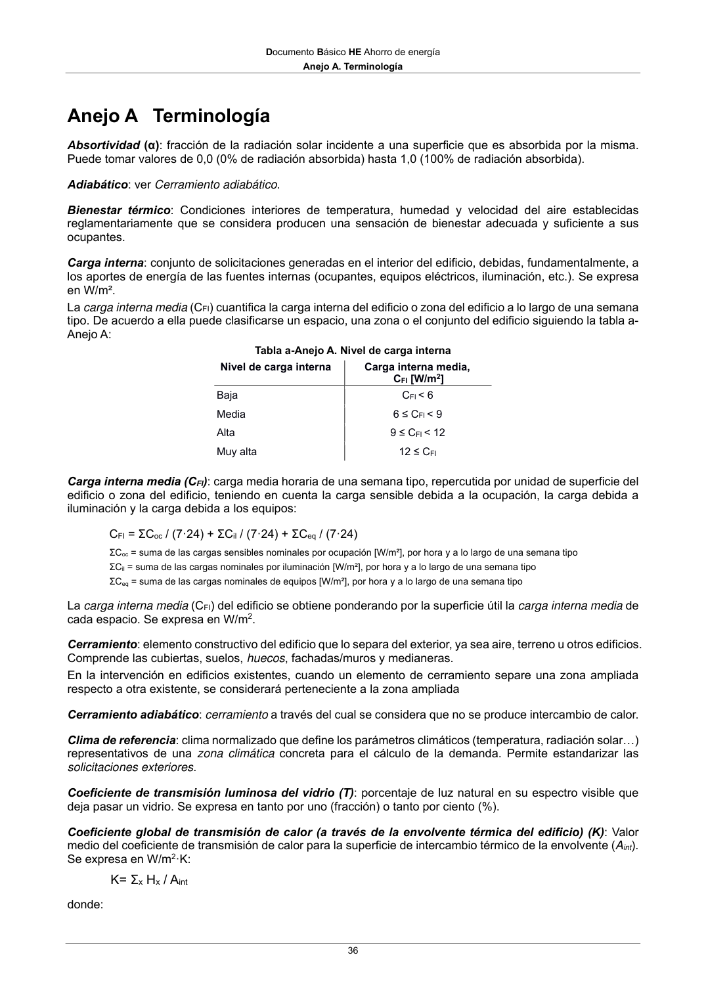

DB-HE · Anejo A. Terminología · versión 2022-06-14 · capa oficial
Formatos: JSON compacto · Markdown · PDF fuente
Ámbito del documento · texto del ámbito · documento y tablas
ID técnico a0071 · PDF pág. 36 · jerarquía no validada por persona · contrastado con el literal de la página 36 (candidato tipográfico); no validado por persona · padre: raíz
Anejo A. Terminología 36 Anejo A Terminología Absortividad (α): fracción de la radiación solar incidente a una superficie que es absorbida por la misma. Puede tomar valores de 0,0 (0% de radiación absorbida) hasta 1,0 (100% de radiación absorbida). Adiabático: ver Cerramiento adiabático. Bienestar térmico: Condiciones interiores de temperatura, humedad y velocidad del aire establecidas reglamentariamente que se considera producen una sensación de bienestar adecuada y suficiente a sus ocupantes. Carga interna: conjunto de solicitaciones generadas en el interior del edificio, debidas, fundamentalmente, a los aportes de energía de las fuentes internas (ocupantes, equipos eléctricos, iluminación, etc.). Se expresa en W/m². La carga interna media (CFI) cuantifica la carga interna del edificio o zona del edificio a lo largo de una semana tipo. De acuerdo a ella puede clasificarse un espacio, una zona o el conjunto del edificio siguiendo la tabla a-

PDF fuente redistribuible: copia fiel enlazada en esta página (SHA256 verificado).